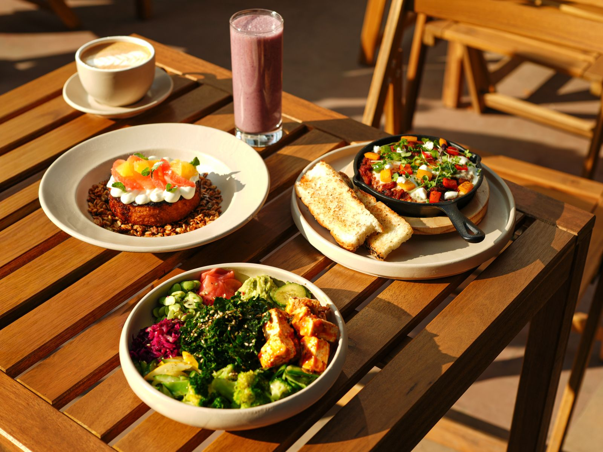

Everything you need to make the switch.
Find vegan alternatives for the food and products you already love.

Start with one simple swap
Pick a category that feels easy to begin with.
Cow's milk
Creamy, classic, and part of so many moments.
Plant milk
Same comfort, made from plants.
Popular alternatives
Budget-friendly choices
Eating vegan doesn't have to be expensive.
- Beans & lentils → ground meat
- Tofu → chicken or fish
- Oatmeal → breakfast
- Store‑brand plant milk → dairy milk
New to veganism?
Start with our beginner-friendly resources.
Every step counts. 🌱
Progress, not perfection. You're doing something good.
Explore
Find products, whole-food swaps, homemade alternatives, and beyond.
Dietary tags describe listed ingredients only and do not guarantee freedom from manufacturing cross-contact. Verify current packaging when allergies are involved.
No products found. Try adjusting your filters.
Recipes
Delicious plant‑based meals for every occasion.
Type
Needs
Dietary
Difficulty
No recipes found.
Research, without the gotchas
Evidence Library
Search common questions about veganism and see what the evidence supports, what needs context, and what science cannot answer by itself.
Start here
Tap one for the full answerCommon questions
No matching claims
Try a shorter search or choose another category.
When Harm Becomes Normal
A practice being legal, traditional, profitable, familiar, or socially accepted does not by itself tell us whether it is ethical.
This is not a claim that animal agriculture is identical to human atrocities.The victims, histories, circumstances, and forms of suffering are different. The comparison here is about a recurring social mechanism: people can become accustomed to harmful systems and build language, institutions, laws, and economic interests around them.
01
Normalization is not justification
History gives us many examples of practices that were defended or tolerated within their societies and later condemned, restricted, or abolished.
People treated as property
Enslavement was embedded in law and major economic systems for generations. Its historical acceptance did not make ownership of human beings morally defensible.
Library of Congress ↗Dangerous work became ordinary
Industrial child labor placed large numbers of children in factories, mills, mines, and street work. Reform came despite arguments involving family income, industry, and established practice.
Library of Congress ↗Indigenous children removed from culture
Federal Indian boarding schools separated Native children from families and sought to suppress languages, religions, names, clothing, and cultural practices, often through coercion and punishment.
National Park Service ↗Research without meaningful consent
The U.S. Public Health Service study at Tuskegee continued for decades without informed consent and without offering appropriate treatment even after effective treatment was available. Its exposure helped drive research-ethics reform.
National Library of Medicine ↗Forced sterilization presented as social improvement
Eugenic movements classified people as biologically or socially "unfit" and promoted compulsory sterilization. Such ideas influenced policy in multiple countries and were taken to horrific extremes by Nazi Germany.
U.S. Holocaust Memorial Museum ↗Human beings displayed as spectacles
Late nineteenth and early twentieth century exhibitions displayed people described as "primitive" before paying audiences. Historians caution that these exhibitions varied, but they were closely tied to colonialism, racism, and exoticization.
Peer-reviewed history ↗Boys altered to preserve singing voices
For centuries, some boys were castrated before puberty so their voices would remain high into adulthood. A small number became celebrated singers, while the bodily alteration itself served religious and artistic institutions rather than the child's medical needs.
Peer-reviewed history ↗Coercion turned into an institution
Compelled labor has repeatedly been justified by states and private interests. International standards now recognize forced labor as a fundamental rights violation, although it continues today.
International Labour Organization ↗02
How harmful systems become ordinary
No single mechanism explains every historical case, but the same kinds of defenses appear repeatedly.
Tradition“We have always done it.”
Legality“It is allowed, therefore it is acceptable.”
Economics“Jobs and livelihoods depend on it.”
DistanceThe harmed individual becomes invisible to the beneficiary.
LanguageTechnical or commercial terms can make physical realities easier to ignore.
InstitutionsRoutine procedures can distribute responsibility until no individual feels responsible for the whole system.
03
Now apply the question consistently
The historical lesson is not that every accepted practice is secretly evil. It is that acceptance alone cannot settle the moral question.
When a sentient animal can experience pain, fear, distress, confinement, separation, or death, what justifies imposing those harms?
If a practice is defended primarily by taste, convenience, tradition, legality, or profit, ask whether those reasons are sufficient when practical alternatives are available.Normal does not mean moral. Sometimes normal is simply what a society has become accustomed to no longer questioning.
Learn where products come from. Look beyond packaging and familiar terminology. Question what you were taught was inevitable. Then decide what you are willing to participate in when another option is reasonably available.
Resources Library
Go deeper with documentaries, books, talks, podcasts, organizations and evidence-based references.
You control the experience. External videos never autoplay. Graphic resources are clearly marked so you can decide whether and when to engage.
Free
Graphic
Content note:
Open resource
No resources match those filters.
External resources are included for education, not blanket endorsement. Availability and content can change; health material does not replace individualized medical advice.
Animals Library
Learn about the animals behind everyday products and discover compassionate alternatives.
No animals found matching your criteria.
Favorites
No favorites yet.
Everyday Products
Discover common household products that may contain animal-derived materials, and find vegan alternatives.
Ingredient Library
Browse animal-derived ingredients and their vegan alternatives.
No ingredients found.
Nutrition
Explore important nutrition topics for plant-based eating.
💡 Remember: This information is educational, not medical advice. Consult a registered dietitian or healthcare provider for personalized guidance.
About Go Vegan
Go Vegan is a free, open‑source educational application designed to help people understand veganism and make the switch, step by step.
We believe in progress, not perfection. Veganism is defined by The Vegan Society as “a philosophy and way of living which seeks to exclude—as far as is possible and practicable—all forms of exploitation of, and cruelty to, animals for food, clothing or any other purpose.”
This app is built with compassion and respect for everyone, regardless of where they are on their journey. We do not shame or judge. We recognize that disability, medication needs, health conditions, poverty, food access, geography, and survival circumstances can affect what is possible for each person.
Companion project
Continue the connection with Zerra
Go Vegan focuses on animals, normalized exploitation, plant-based alternatives, and compassionate action. Zerra is a separate companion app that explores our wider relationship with Mother Earth through ecological literacy, practical skills, responsibility, reciprocity, and regeneration.
Explore ZerraPlease note: Product formulas, company policies, and ingredient sourcing change frequently. Always verify current packaging and manufacturer statements before relying on any product information shown here. Product availability varies by region.
Not medical advice: The nutrition information provided is for educational purposes only. Consult a registered dietitian or healthcare provider for personalized guidance. Never stop or change medically necessary treatment without professional advice.
Open source: Go Vegan is an open‑source project. Contributions, corrections, and suggestions are welcome. If you find an error or have a reliable source to share, please reach out.
All data is provided for guidance only. We strive for accuracy but cannot guarantee completeness or currency.